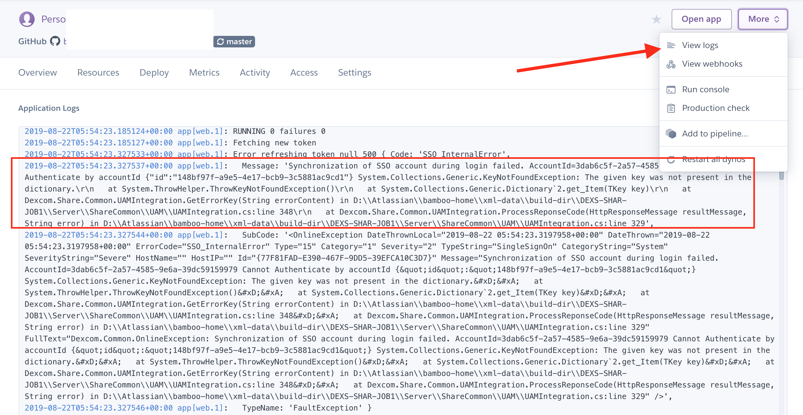
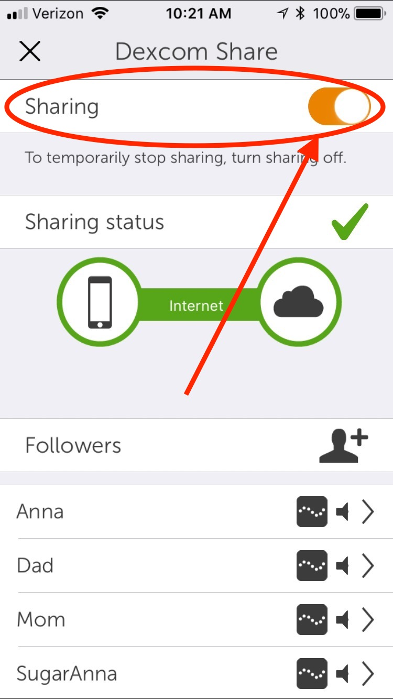

Setup Troubleshooting¶
If you have just tried to set up your Nightscout site and have problems with seeing all your data, please check out the information below.
Dexcom data not showing¶
If you are using a Dexcom system, and your data is not appearing in Nightscout, there are only a limited number of reasons for that. You should check your (1) Heroku settings and (2) Dexcom Share.
NOTE: The #1 reason why BGs aren't showing is that you have mismatched password and user names in Heroku settings and Dexcom. Please see blue box below for that error.
Heroku Settings¶
Login to your Heroku account and from within Heroku settings, click on the Reveal Config Vars

Now from the Config Vars area, check the following (see screenshot below for reference):
- You must use the same
BRIDGE_PASSWORDorBRIDGE_USER_NAMEthat your Dexcom mobile app is using. - You must have
bridgeandcareportalon theENABLEline (you can have other values there...but don't forget these two). - If you are outside the USA, you must add
BRIDGE_SERVERset toEUin Heroku settings. - Your
careportalmust be one word in theENABLEline, sometimes autocorrect makes it two words. - If using
mmol, make sure you have spelled that value correctly in theDISPLAY_UNITS.

One thing that can happen if you have an incorrect Dexcom login/password in Loop's CGM Share account settings and/or in your Nightscout BRIDGE settings is that Dexcom will lock your account...and you won't see CGM data in Nightscout. If you notice your CGM readings disappeared, but everything else is flowing...check your Heroku logs that are viewable by selecting "View Logs" from the drop-down menu underneath the "More" option.

Do your logs have "SSO authentication errors" like in the red box highlighted above? If you do, then:
-
Delete your share account entry from your Loop's CGM account settings...like you should have NO ENTRY in your share account settings WITHIN LOOP CGM SETTINGS.
-
Delete your BRIDGE entries within Heroku settings. Don't delete the rows, just delete the entries within BRIDGE_PASSWORD and BRIDGE_USER_NAME.
-
Wait 15 minutes and then follow the directions in the blue box below. It is important to wait the 15 minutes...the reason you can't log in right now is that your Dexcom account has a temporary lock from one of the passwords in step 1 or 2 being incorrect. The temporary lock will expire after 10-15 minutes of giving the account login a break from the incorrect logins. So, definitely wait or else you'll just keep prolonging the issue.
About your Bridge password and user name
The BRIDGE_PASSWORD and BRIDGE_USER_NAME are NOT visible from within your Dexcom mobile app or online account. The values of them are what you entered into your Dexcom mobile app when you VERY FIRST logged into that app however long ago. If you have double-checked everything else that could be incorrect and BGs still aren't showing in Nightscout, then you likely have those Bridge values incorrect. To fix that, delete your Dexcom app (don't stop the session before deleting the app...just keep it going). Download the app again from the iPhone's App Store and login to the freshly-downloaded Dexcom app. Take note that deleting the app will not stop your session, your session will pick right back up once the transmitter pairs again. The BRIDGE_USER_NAME is not an email address. Use that exact same login now in your Heroku settings. You can leave your Loop's Share account info blank...you just need the transmitter ID going forward.
Dexcom Share¶
Make sure you have Dexcom Share turned ON in your Dexcom app. In the Dexcom app's main screen, find the triangle made of dots. If the dots are grey, you do not have Share turned on. Tap the triangle, and follow the directions to add a follower (yourself if you don't have someone else you'd like to invite) and turn on Share.

Loop data not showing¶
If your BG data is showing, but Loop data is not (like Loop pill is empty and carbs and boluses are not showing), please delete your Nightscout account in Loop settings area. Enter the information in freshly. Make sure to use https:// to start the site URL. Make sure there is no trailing slash at the end of the URL. Make sure you have loop on the ENABLE line in Heroku settings.